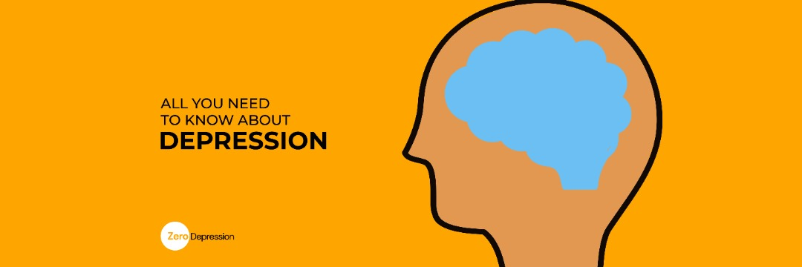

WhAT IS DEPRESSION
In recent times, there has been a high trend of depression cases and this mental disorder cuts across people from all age groups.....
Read Full PostBy Admin
02/04/2022

Jane struggles daily to get out of bed. Waking up is the easy part,
but finding the drive to move about the day is usually a herculean
task.
Jane’s life seemed perfect on the outside. Everyone said she had the
perfect parents, wealthy status, and great school grades. So why was
she always in a gloom and doom state?
Felicity knew what suffering tasted like, coming from a home where 3
square meals were a luxury and hand-me-downs were the only fashion
statements she owned. Her life was already so bleak, so it was
understandable that she would sink lower and lower into depression.
Jane and felicity though from different life spectrums, both suffer
from massive bouts of depression. This just about proves that
anybody can be depressed.
Feeling depressed is one of the common symptoms of being human, and
you can't control that it happens. The issue is that we felt ashamed
of it but the only way to feel good again is to face it.
External factors do not dictate who suffers from this mental
illness, it is a health factor that controls the way we think and
act. Sad feelings are common with every human; hence, anybody can
slip into depression due to aggravated bouts of sadness.
Factors that promote depression are mostly internal and stem from
several issues.
The major factors of depression are:
Depression can run in families as there are genes like the
Serotonin transporter gene that promote the feelings of
depression. This means that members of the same family can fall
into depression at certain times in their lives. Hormonal
imbalance is a contributing factor to depression, and through
medications, it can be treated.
Depression stems from the inside, promoted by negative thought
patterns, overthinking, and intense worry. A person suffering from
low self-esteem or dealing with lots of criticism can very well
fall into depressive sessions and lose the will to carry out daily
functions.
Another determinant of depression is life experiences. Some
traumatic experiences can make a person get stuck in a web of
self-deprecating thoughts which develop into feelings of
self-loathing and thoughts that make being alive a chore.
Some persons blame themselves for these situations and this leads
them to sink into dark harmful thoughts that compound to
depression.
Depression affects people despite their social standing in life or
what their situations look like on the outside. Social
environments like growing up in an unstable family, violent
environment, or abusive relationships all work as factors that
promote depression.
Depression is not a personal weakness; it is a treatable mental
illness that is not limited to certain persons.
There is yet no proven preventive measure, as it has no singular
cause for it. It is treatable though, as drugs like
antidepressants and hormone boosters help to reduce the rate of
depression.
Stress also plays an effective role in fostering depression,
workplace stress can get overwhelming. From nasty bosses to nosy
and disruptive co-workers, the work overload can also increase
stress levels which can develop into depression.
Sometimes people set unrealistic standards that are unachievable
and when they cannot reach that standard, they fall into feelings
of sadness which escalate into depression.
Losing a family member or loved one leaves quite a gaping hole in hearts, and some persons never heal from this grief no matter how long it takes. Even years later, the pain of the loss remains fresh and the possibility of slipping into depression is quite high.
Some drugs can alter brain chemicals they are usually side effects
from treating certain conditions.
The use of substances also induces depression, because it alters
brain activity and causes heightened emotions which die down after
a while and leave room for thoughts that foster depression.
From these factors, you can see that depression is not just for
certain persons, but can affect any person.
Conclusion: In the end, we are all just people trying to get through life. If someone tells us they are depressed, help them instead of trying to make it seem like it was their fault. We are all just here trying to get through life

0 Likes


In recent times, there has been a high trend of depression cases and this mental disorder cuts across people from all age groups.....
Read Full PostBy Admin
02/04/2022
When you found out you need therapy. Sometimes, choosing the right therapist becomes
Read Full PostBy Admin
02/04/2022
0 comments